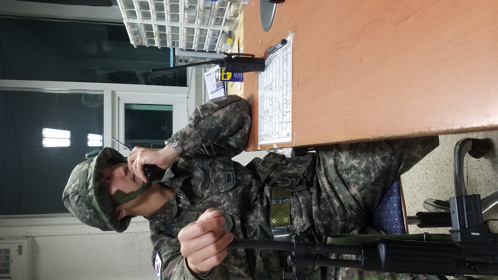
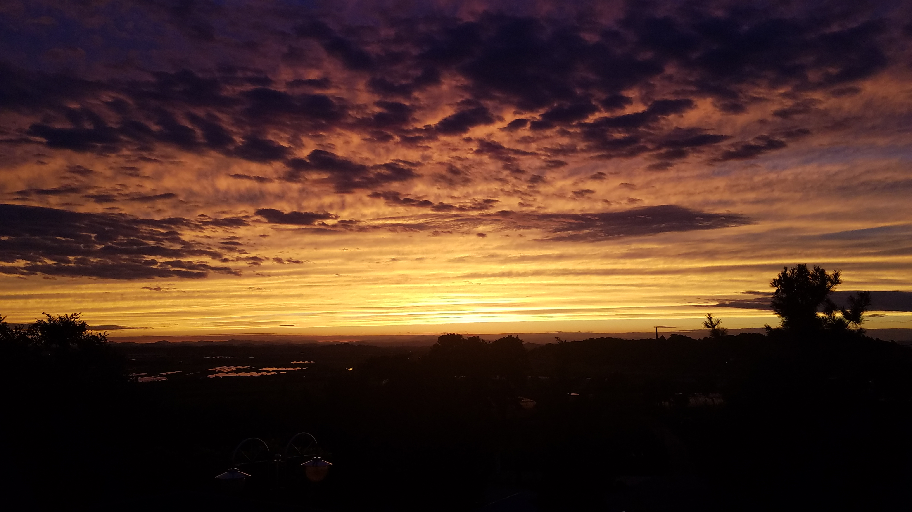

!DOCTYPE html
html lang="en"
head
title 군대로 /title
body
section
img src="./군대/1.jpg" alt="1-1"
아니 근데 이게뭐야..평생 안갈줄 알았던 군대를 가야할 시기가 찾아온거다
/section
section
img src="./군대/2.jpg" alt="1-1"
군대는 가더라도 미국물이 전부 빠지지를 안아서 미국의 잔재가 남아있다
/section
section
img src="./군대/3.jpg" alt="1-1"
하지만 매일 먹는 된장국과 근무로 인해 나의 미국을도 빠지며 정상적인 사람이 되어가기 시작했다
/section
section
img src="./군대/4.jpg" alt="1-1"
근무 열심히 서면서 시간을 보내다보니

/section
section
img src="./군대/5.jpg" alt="1-1"
어느덧 전역이 다가왔다 그리고 다 같은 하늘인데 군대에서 보는 하늘은 왜이리 아름다울까?

/section
/body
/html